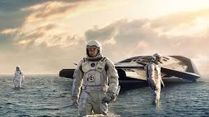
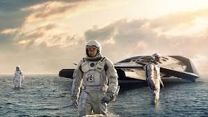

The Smile
"The Smile" is a captivating psychological thriller that delves into the depths of human emotion and the complexities of the mind. Directed by acclaimed filmmaker Sarah Klein, the movie takes audiences on a haunting journey through the intertwined lives of its characters, exploring themes of identity, memory, and the masks we wear to conceal our true selves. At the center of the narrative is Emily, a young woman haunted by a traumatic event from her past that she struggles to remember. As Emily grapples with fragmented memories and recurring nightmares, she becomes increasingly isolated from those around her, including her concerned boyfriend, Alex, and her supportive but distant family. The film's tension mounts when Emily discovers a mysterious photograph hidden away in her attic—a faded image capturing a moment of innocence long forgotten. The photograph features a smiling young girl who bears a striking resemblance to Emily herself, yet she has no recollection of the moment it was taken or the people in it. Driven by a desperate need for answers, Emily embarks on a perilous journey to uncover the truth behind her forgotten past. Along the way, she encounters a series of enigmatic characters, each holding a piece of the puzzle that will ultimately reveal the dark secrets buried within her subconscious. As Emily delves deeper into the labyrinth of her own mind, she confronts the disturbing truth of her origins—a truth that threatens to shatter her fragile sense of self and plunge her into a terrifying descent into madness. "The Smile" is a masterfully crafted thriller that keeps audiences on the edge of their seats from start to finish. With its atmospheric cinematography, haunting score, and powerhouse performances, the film explores the blurred lines between reality and illusion, leaving viewers questioning their own perceptions of truth and identity long after the credits roll.